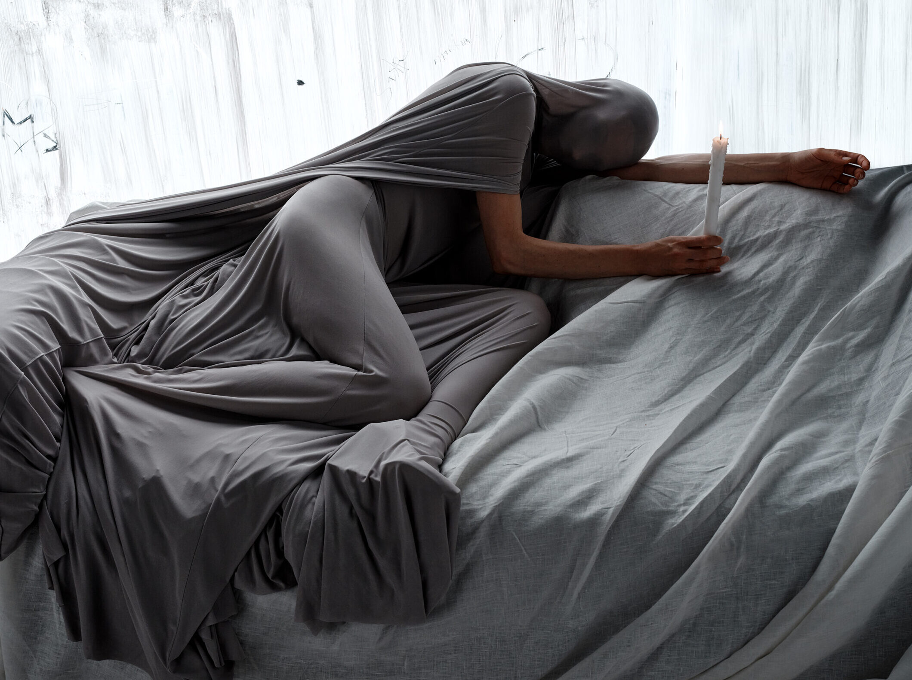

Glenn Martens brought Maison Margiela to Shanghai for a seventy-five-look AW 2026 show staged among shipping containers at Xintiandi. Then he opened the house’s Dropbox folders to the public. Shanghai Fashion Week has never made a louder statement about where fashion’s centre of gravity is shifting.
The show was called MaisonMargiela/folders, and the name was not a metaphor. Alongside the runway presentation on 1 April, Martens released the house’s internal digital archive — mood boards, fitting photographs, fabric swatches and design notes — through a public-facing platform and a series of exhibitions staged across China. It was the most radical act of institutional transparency any major house has attempted, and it happened not in Paris but in Shanghai.
The setting was deliberate. A metropolis of stacked shipping containers created a labyrinthine venue at the heart of Xintiandi, Shanghai Fashion Week’s spiritual home. The containers functioned as both architecture and allegory: vessels of global commerce repurposed as a stage for clothes that are themselves obsessed with repurposing. Martens has made the reworked garment his signature at Margiela, and the containers gave that idea a physical scale it has never had on a runway.
The collection
Seventy-five looks moved through the container corridors. Liquid-like drapes in crinkled chiffon opened the show, followed by precise tailoring with a gothic sharpness that recalled Martin Margiela’s earliest collections. Fabric face coverings — painted with makeup, warped and deliberately misshapen — gave each model an alien quality that oscillated between sinister and mournful. The house’s iconic four-stitch motif appeared as metal mouth devices, a piece of brand vocabulary translated into something confrontational and strange.
Martens kept the focus on fabric rather than embellishment. Recycled denim was cut alongside crinkled slip dresses. Adhesive tape appeared as decorative binding. Waistcoats were integrated into longer garments, creating silhouettes that confused where one piece ended and another began. The effect was of a wardrobe that had been taken apart and reassembled by someone who understood every seam but felt no obligation to put them back in the original order.
When Margiela stages its most ambitious show not in Paris but in Shanghai, it is not following a trend. It is acknowledging a reality. The audience is here. The energy is here. The future is being cut and sewn here.
Margaux DelacroixWhy Shanghai
Maison Margiela was not the only international name drawn to the FW26 schedule. Vera Wang presented in Shanghai. Adidas Originals mounted a major activation. Apple staged a creative collaboration. But Margiela’s presence carried a different weight. This is a house whose identity was forged in the margins of the Paris calendar, in abandoned supermarkets and car parks. To relocate its ready-to-wear show to Shanghai was to declare that the margins have shifted, and that the city where fashion’s most interesting conversations are happening is no longer necessarily the one where the Chambre Syndicale keeps its calendar.
Shanghai Fashion Week’s FW26 edition, themed Ascending Through Design, featured more than sixty brands and a visibly increased international buyer presence. The schedule was anchored at Xintiandi but extended across the city, with Prada hosting a soirée at its 1918 villa and Tom Ford staging a beauty launch with Angelina Jolie. The commercial infrastructure has caught up with the creative ambition. What was once a regional platform now functions as a credible international market.

Glenn Martens’ Maison Margiela: rewriting the house’s codes from Shanghai. Photography courtesy of CR Fashion Book
The Chinese designers
The strongest case for Shanghai’s arrival was made not by the European guests but by the Chinese designers on the schedule. Feng Chen Wang, whose layered, deconstructed sportswear has earned her a following from London to Los Angeles, showed a collection that mixed industrial hardware with soft knits. Susan Fang continued her experiments with translucent, air-woven textiles that create volume without weight. SHAO, a label making its runway debut, brought a film-noir aesthetic inspired by 1990s Hong Kong triad cinema — sharp shoulders, long leather coats, a cinematic darkness that felt entirely new on a Shanghai runway.
Jacques Wei, Short Sentence, 8on8 and Comme Moi rounded out a schedule that demonstrated the breadth of Chinese design in 2026. These are not designers working in a single idiom. The aesthetic range spans maximalist layering, minimalist tailoring, experimental textiles and streetwear-adjacent edge. What connects them is a confidence that owes nothing to European validation. They are building careers, stores and audiences from Shanghai, and the international market is coming to them.
The archive as invitation
The folders project may prove more significant than the runway show itself. By releasing the house’s internal creative archive — the working documents that are normally guarded with the same secrecy as a couture toile — Martens acknowledged something that Shanghai’s fashion audience already understands: the process is as compelling as the product. China’s fashion consumers are educated, curious and impatient with mystification. They want to see the fitting notes, the rejected colourways, the mood board that led to the final collection. Margiela gave them everything.
It is a gesture that could only have been made in Shanghai, where the appetite for transparency and the digital infrastructure to deliver it are both more advanced than in any European fashion capital. The exhibitions running alongside the show extend through April, and the digital archive remains open. Margiela has not simply shown a collection in Shanghai. It has opened a permanent conversation with the city.